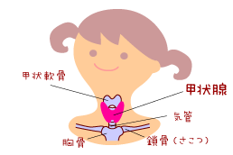
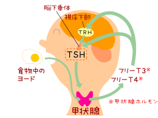

Lesson1 : 甲状腺とその働き
1-1 甲状腺はどんな器官？甲状腺（こうじょうせん）は、首の正面の真ん中あたり（ちょうど喉ぼとけと言われている部分の下）に、木の幹（気管）に虫のチョウ（甲状腺）が羽を広げてとまっているような形をしている器官です。成人では約15〜20グラム程度の重さがあり、正常ではとても柔らかいので、外から触ってもなかなか判らないことが多いです。 |
 |
1-2 甲状腺のはたらき甲状腺は、身体の成長や新陳代謝を促すために、とても重要な働きをする器官です。食物などに含まれるヨードを材料にして、甲状腺では[サイロキシン(T4)]と[トリヨードサイロニン(T3)]という2種類の甲状腺ホルモンがつくられます。 |
 |
甲状腺刺激ホルモン（TSH）の刺激で甲状腺ホルモンの量が多くなると、脳下垂体が「甲状腺ホルモンが多い！」という信号を受け、甲状腺刺激ホルモン（TSH）の分泌を休むことになります。
反対に、甲状腺ホルモンが少ないと、脳下垂体が「甲状腺ホルモンが少なすぎる！」という信号を受け、甲状腺刺激ホルモン（TSH）がどんどん分泌されるようになります。
このように、甲状腺刺激ホルモンと甲状腺ホルモンはとても密接に関係しているので、甲状腺ホルモンが低値であるか、または甲状腺刺激ホルモン（TSH）が高値であるかを検査することで、甲状腺機能低下症が見つけられます。生まれつき甲状腺の働きが悪い状態−これを先天性甲状腺機能低下症（クレチン症）と呼びます−を早く見つけるための新生児マススクリーニングでは、主に甲状腺刺激ホルモン（TSH）が測定されますが、日本の一部地域では甲状腺ホルモン（遊離サイロキシン（FT4））も同時に測定しています。